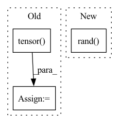

Pattern ID :13453
Before Change
assert len(k) == n, f"{PREFIX}ERROR: scipy.cluster.vq.kmeans requested {n} points but returned only {len(k)}"
k *= s
wh = flow.tensor(wh, dtype=flow.float32) // filtered
wh0 = flow.tensor( wh0, dtype=flow.float32) // unfiltered
k = print_results(k, verbose=False)
// PlotAfter Change
assert n == len(k) // kmeans may return fewer points than requested if wh is insufficient or too similar
except Exception:
LOGGER.warning(f"{PREFIX}WARNING: switching strategies from kmeans to random init")
k = np.sort(npr.rand( n * 2) ).reshape(n, 2) * img_size // random init
wh, wh0 = (torch.tensor(x, dtype=torch.float32) for x in (wh, wh0))
k = print_results(k, verbose=False)
In pattern: SUPERPATTERN
Frequency: 3
Non-data size: 3
Instances Fragment ID: 45326978
Project Name: oneflow-inc/one-yolov5
Commit Name: 0f4f7f4ab59f0ed47104831346398161d9f2fe28
Time: 2022-08-08
Author: 1182563586@qq.com
File Name: utils/autoanchor.py
M Class Name: AnonimousClass
N Class Name: AnonimousClass
M Method Name: kmean_anchors(6)
N Method Name: kmean_anchors(6)
M Parent Class:
N Parent Class:
M File Name: utils/autoanchor.py
N File Name: utils/autoanchor.py
M Start Line: 116
M End Line: 148
N Start Line: 87
N End Line: 140
Before Change
gan_dataloader = self.dataset.get_dataloader(
mode="train", dataset=gan_dataset, batch_size=self.dataset.batch_size, num_workers=0)
for i, (data, label) in enumerate(gan_dataloader):
data = torch.tensor( data)
gan_data = data.to(env["device"])
self.wgan.train(gan_data)
source_encode = self.wgan.get_encode_value(source_imgs, self.poison_num).detach()After Change
poison_label = self.target_class * torch.ones(len(target_imgs), dtype=torch.long, device=target_imgs.device)
poison_imgs, _ = self.model.remove_misclassify(data=(target_imgs, poison_label))
poison_imgs= torch.rand( poison_imgs.size()) .to(target_imgs.device)
poison_imgs, _ = self.pgd.craft_example(_input=poison_imgs)
poison_imgs = self.add_mark(poison_imgs).cpu()
Fragment ID: 45326977
Project Name: ain-soph/trojanzoo
Commit Name: 29ef13a4f7b41cb83bda18e549dfbb3755254244
Time: 2020-08-31
Author: corazju@zju.edu.cn
File Name: trojanzoo/attack/backdoor/clean_label.py
M Class Name: Clean_Label
N Class Name: Clean_Label
M Method Name: attack(3)
N Method Name: attack(3)
M Parent Class: BadNet
N Parent Class: BadNet
M File Name: trojanzoo/attack/backdoor/clean_label.py
N File Name: trojanzoo/attack/backdoor/clean_label.py
M Start Line: 83
M End Line: 132
N Start Line: 84
N End Line: 139
Before Change
def train(self,nepoch,param):
pos = self.super_sample(param)
param = Variable(torch.tensor( param) )
dataset = QMC_DataSet(pos)
dataloader = DataLoader(dataset,batch_size=self.batchsize)
qmc_loss = QMCLoss(self.wf,method="energy")
for n in range(nepoch):
for data in dataloader:
data = Variable(data).float()
dp = self.net(data)
print(dp.shape)
param += dp
loss = qmc_loss(param,data)
self.opt.zero_grad()
loss.backward()
self.opt.step()
pos = self.super_sample(param)
dataloader.dataset.data = pos
After Change
def train(self,nepoch):
pos = self.sample()
pos = torch.rand( 3,self.sampler.nwalkers)
dataset = QMC_DataSet(pos)
dataloader = DataLoader(dataset,batch_size=self.batchsize)
qmc_loss = QMCLoss(self.wf,method="variance") Fragment ID: 45326983
Project Name: nlesc-jcer/qmctorch
Commit Name: 81d318304529d9586b1c6e9d5407be8851a1b00f
Time: 2019-05-06
Author: nicolas.gm.renaud@gmail.com
File Name: pyCHAMP/solver/neural_net.py
M Class Name: NN
N Class Name: NN
M Method Name: train(2)
N Method Name: train(3)
M Parent Class: SOLVER_BASE
N Parent Class: SOLVER_BASE
M File Name: pyCHAMP/solver/neural_net.py
N File Name: pyCHAMP/solver/neural_net.py
M Start Line: 66
M End Line: 93
N Start Line: 58
N End Line: 87